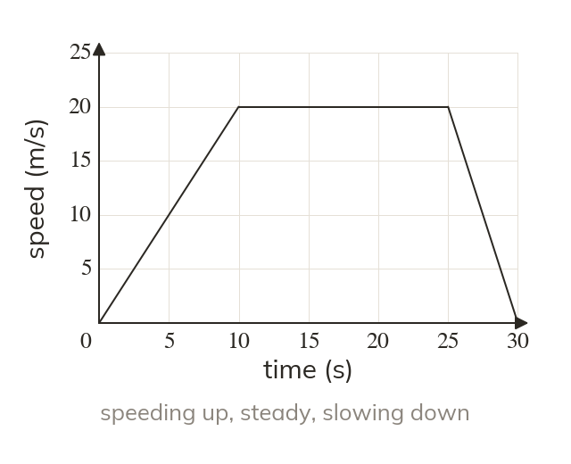
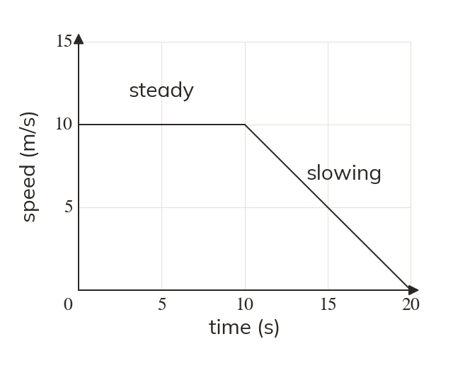
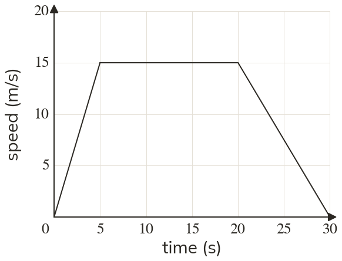
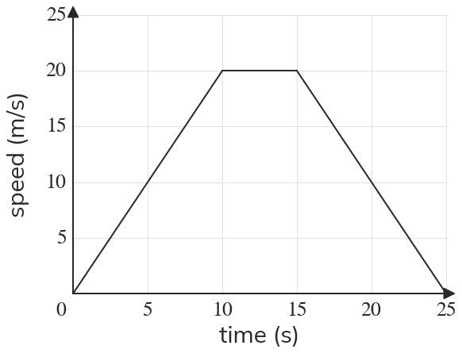
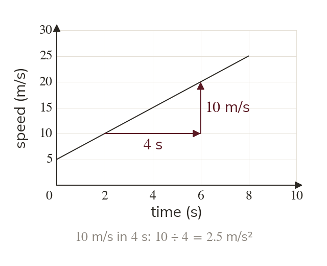
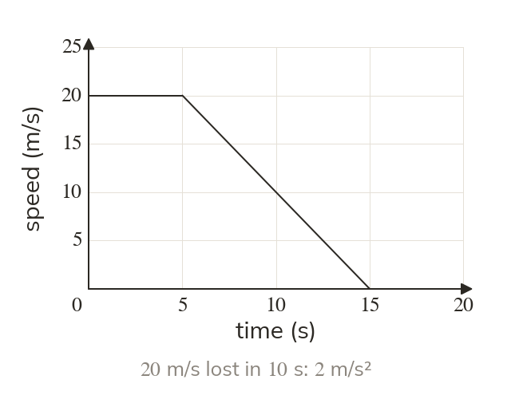
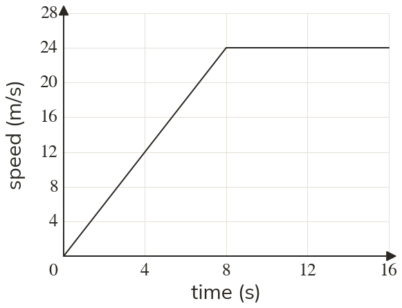
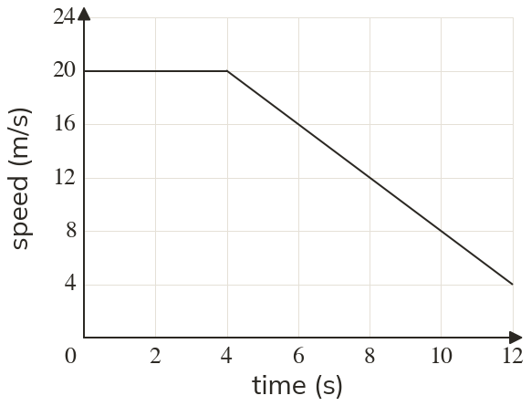

What the axes say
A speed-time graph plots speed against time. A horizontal section is a constant speed, not a stop.
A speed-time graph looks like a distance-time graph, but it tells a different story: a flat line is a steady speed, not a stop. Its steepness is how fast the speed is changing - the acceleration.
Work down the page at your own pace. Write every answer in your book first, then click to check it.
Read each card, then follow the worked examples one step at a time.

A speed-time graph plots speed against time. A horizontal section is a constant speed, not a stop.

A line sloping down means slowing down. Reaching the time axis means the speed is zero: stopped.


Pick an answer. If it's wrong, the feedback tells you which mistake it was.
Printable worksheet — the questions with room to work.


Read each card, then follow the worked examples one step at a time.

The gradient of a speed-time graph is the change in speed divided by the time taken: the acceleration. Its unit comes from the axes: m/s each second, written m/s²

A line sloping down has a negative gradient: a deceleration. Steeper means the speed changes faster, not that the object is faster.


Pick an answer. If it's wrong, the feedback tells you which mistake it was.
Printable worksheet — the questions with room to work.

Finished? Next lesson: 10.23.1 Bar Charts and Pictograms.
Log in, then search for a code to practise that skill.
Videos, worksheets and more on each part of this lesson.